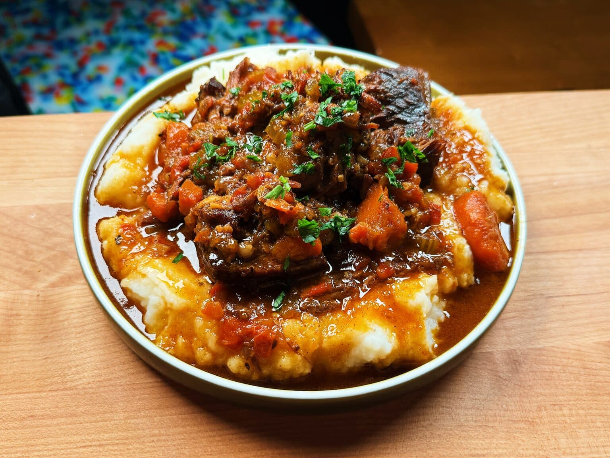

Beer Braised Beef

Description
While it might look impressive, this beer braised beef is less fussy than you might think. The most difficult step in this entire beer braised recipe recipe is probably waiting for the beef to slowly simmer in the oven until it’s nice and tender.
Ingredients
- 3 to 3.5-pound (1.3 to 1.5 kg) chuck roast
- Kosher salt
- 3 small yellow onions
- 2 medium red bell peppers
- 4 celery sticks
- 1 large carrot
- Extra-virgin olive oil, grape seed oil, sunflower seed oil, etc., for searing
- 12 garlic cloves
- 1 tablespoon sweet paprika
- 2 teaspoons fennel seeds, roughly crushed
- 2 teaspoons chili flakes
- Black pepper
- 4 cups (1 liter) light beer
- 1/8 cup (2 tablespoons) soy sauce
- 1/8 cup (2 tablespoons) rice vinegar or apple cider vinegar
- Fresh parsley, for serving
Instructions
-
Place the beef on a cutting board and slice it into 12 to 14 cubes. Generously season with kosher salt on all sides and set it aside.
- Prep the veggies: Dice the onion, bell peppers, slice the celery into 1/4-inch (0.5 cm) thick slices, and coarsely chop the carrot into bite-sized pieces. You could also add the onion, peppers and celery to a food processor and coarsely process if you want to speed up your prep time.
- In a medium (4 to 6 quart) heavy-bottomed pot or Dutch oven over medium heat, add enough oil to cover the bottom of the pot. Working in 2 batches, add the beef to the pot and sear for 10 to 15 minutes until deeply seared and brown in color, flipping the meat halfway through. Remove the beef chunks from the pot, set them aside in a clean bowl and repeat with the remaining batch, adding more oil as needed for searing. Remove the beef from the pot.
- Add the onion, bell peppers, celery, carrot chunks, garlic cloves, paprika, fennel, chili flakes, black pepper and a hefty pinch of salt. Cook over medium heat, stirring occasionally until all veggies have softened, 8 to 10 minutes.
- Set an oven rack in the center of the oven. Heat the oven to 350°F (175°C).
- Pour the beer, soy sauce, vinegar in the pot and add back the seared beef chunks, as well as all the juices from the bowl. Bring the liquid to a simmer. Cover the pot with a lid and carefully place the pot in the oven. Cook for 2 1/2 to 3 hours, until the beef is fork tender. The beer will reduce to about a 1/4 or 1/3 of its initial volume. Come back every hour or so and baste the meat with the juices from the pot to prevent the tops of the beef from drying out.
- Taste and season with more salt if needed. Serve with fresh parsley on top.